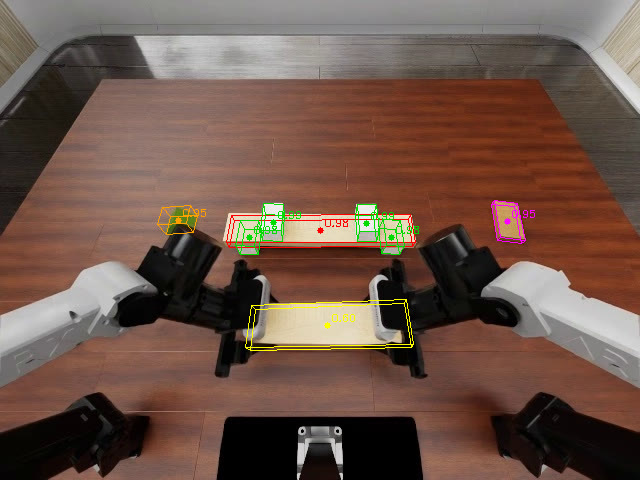

Research project · Jun – Nov 2026 · on hold
Lightweight World Action Models for Robotic Manipulation
Turning a learned interactive world simulator into a compact robot policy
RoboPIL Lab, Columbia University
Overview
A World Action Model (WAM) is a robot policy built around a learned world model. This project builds WAMs on the Interactive World Simulator (IWS), a latent video world model from our lab that predicts how a scene responds to robot actions. The question running through it is a practical one: when does a world model actually help a policy?
I first studied this on Push-T, where I compared several ways for an action head to use IWS against a vision-language-action model trained on the same demonstrations. I then moved to the RoboDojo benchmark: I collected my own interaction data, trained IWS from scratch on it, and reproduced the VPP2 baseline. I then built lightweight WAMs on RoboDojo's build_tower task and benchmarked them against VPP2 under the official protocol. On both benchmarks, precise perception of the objects turned out to matter more than anything the world model added. The project has been on hold since November 2026; the conclusions are summarised below.
Approach
The world model
IWS encodes each camera frame into a compact latent, predicts how that latent evolves under the robot's actions, and decodes the result back into images. It is trained on interaction data, including non-expert play, so it learns how objects respond to contact rather than how to solve one task. That makes it a natural backbone for a policy trained from only a few demonstrations.
Three ways to turn it into a policy
All three routes start from the same world model. The action heads are trained on expert demonstrations.
Read its features
An action head reads the world model's internal features, together with the current image, and predicts a short chunk of actions.
Imagine, then act
The world model imagines the next few frames without being given actions, and a second model infers the actions that connect them.
Video model + action model
A separate video model predicts the future from IWS features, and an action model reads its predictions.
Push-T
Push-T runs in MuJoCo with a Franka arm and a top-down camera, with a strict success criterion on both position and orientation of the T. Every policy learns from the same expert demonstrations and is scored on the same 250 random seeds.
The best WAM, which reads frozen IWS features (route A), succeeded on 171 of 250 episodes. That is on par with a 450M-parameter SmolVLA trained on the same demonstrations, which succeeded on 172.
Video 2. A route-A policy on one Push-T episode. The normal policy completes the task; with the world-model features zeroed out, the same policy never touches the block.
What Push-T taught me
The policy relies on the pretrained world model
Removing or scrambling the world-model features breaks the policy, and the same head on an untrained world model does much worse.
Reading beats imagining
Reading the world model's features worked better than imagining the future first and then inferring actions. Near the goal, the imagined futures were too optimistic.
A fine-tuned VLA gains little from IWS here
A VLA that trains its own vision already captures most of what IWS adds on Push-T, so giving it IWS features did not change its success rate significantly.
Similar scores, different failures
The WAM and the VLA tend to fail on different episodes, which points to complementary strengths rather than a shared ceiling.
Follow-ups
Two later experiments sharpened this picture. A scaled-down VPP2 (its architecture with a 1.3B video model) trained on the same demonstrations fell well short of both the WAM and the VLA. A policy that reads precise keypoint states, from a perception network trained with simulator labels, did far better than every RGB policy, so on Push-T the main bottleneck is perception. Adding gradients through a learned world model's imagined rollouts (SuperMimic-style) to that policy gave no gain over plain imitation.
RoboDojo
RoboDojo is a simulated dual-arm manipulation benchmark in Isaac Sim with a public leaderboard. I chose three of its precision tasks, from easy to hard, and started with the easiest, build_tower, where two arms stack boards and blocks into a small tower. One rule shapes the approach: the world model is trained only on data I collected, and the expert demonstrations are reserved for the action head.
Collecting interaction data
I collected 11.9M frames of interaction data over 31k episodes to train the world model.
Video 3A. An example of the collected interaction data (2× speed).
Video 3B. Another collected episode (2× speed).
Training IWS from scratch
I trained IWS from scratch on this data. A world model can look accurate while ignoring its actions, so every checkpoint is checked automatically to confirm that its predictions depend on the actions and not only on past frames (Video 1). The final world models are trained per task, starting with build_tower.
Baseline: reproducing VPP2
VPP2 is a large video-prediction policy, with a 14B-parameter video model and a 2B-parameter action model. I ran its official weights under the leaderboard protocol and reproduced its results on all three tasks within statistical noise. I also checked the official π0.5 weights against their leaderboard score. Both serve as reference points for the WAMs.
WAMs on build_tower
I built two kinds of WAM on the build_tower world model: the staged video model + action model design (route C), and an action head that reads the frozen IWS features directly (route A). As on Push-T, route A came out ahead in my tests. Its action head is a diffusion transformer trained with flow matching on the expert demonstrations; it also reads both wrist cameras and the arm state, and outputs end-effector poses for both arms. The main checkpoints are evaluated under the official leaderboard protocol, and every episode is traced stage by stage in the simulator, so each lost point can be tied to a specific grasp or placement.
This WAM is lightweight: about half the size of SmolVLA. Trained on build_tower alone, with its world model trained only on self-collected interaction data, it succeeded far more often than the benchmark's single-task SmolVLA under the official protocol (12.0% vs. 0.7%). Larger pretrained models remain well ahead, from π0.5 (3.3B) to VPP2 (16B).
Video 4. One episode in which the route-A WAM builds the full tower on an official evaluation layout and returns both arms to their start pose, seen from the head camera (2× speed).
Object states
The traces pointed to object localisation as the main limit. I trained a block detector with simulator labels and fed its object states into the WAM's action head alongside the IWS features. This gave the largest gain of any change I made on build_tower, and a small policy that reads only the object states and arm state, without IWS, did about as well.

Figure 1. The block detector on an expert demonstration. Each board and block gets an estimated 3D pose (drawn as a box), which becomes one object state for the policy.
Conclusions
The project is on hold as of November 2026. Push-T and RoboDojo gave the same answer to its question.
The policy does use the world model
Removing or scrambling the IWS features breaks the policy, so the action head relies on what the world model has learned.
Reading beats imagining
An action head that reads frozen IWS features did better than routes that first imagine the future and then infer actions: clearly on Push-T, and in my tests on RoboDojo.
Perception is the bottleneck
The remaining failures came from locating objects precisely, not from predicting how the scene moves. Object states from a perception network gave the largest gains on both benchmarks, and policies reading them did well even without IWS.
Lightweight WAMs beat same-size baselines, not large models
On Push-T the best WAM matched a 450M VLA. On build_tower, a single-task WAM about half the size of SmolVLA beat the single-task SmolVLA, but larger pretrained models such as π0.5 and VPP2 stayed well ahead.
Project log
-
Jun – Jul 2026
Training-free baselines
MPPI grasping with a Franka arm in the Newton simulator and MPPI planning of atomic tasks in RoboCasa. I then moved to a learning-based direction.
-
Aug – Sep 2026
First WAMs on Push-T
Attached action heads to IWS, got the first closed-loop successes, and set up the evaluation protocol that every later comparison uses.
-
Oct 2026
Push-T comparisons
Compared the three routes and a VLA with and without IWS, and analysed where each one fails.
-
Oct 2026
RoboDojo data collection
Collected 11.9M frames of interaction data in 31k episodes.
-
Oct 2026
IWS on RoboDojo, VPP2 baseline
Trained IWS from scratch, then per-task models, and reproduced VPP2 on all three tasks.
-
Oct – Nov 2026
WAMs on build_tower
Built route-A and route-C WAMs, benchmarked them against VPP2 and π0.5, and traced every failure stage by stage.
-
Nov 2026
Push-T follow-ups
Added a scaled-down VPP2 baseline and a keypoint-state study, which showed that perception is the main bottleneck.
-
Nov 2026
Object states, then pause
Fed detector-based object states into the WAM's action head on build_tower. The project was put on hold at the end of November.
About this project
Research in the RoboPIL Lab at Columbia University, advised by Prof. Yunzhu Li and mentored by PhD student Kaifeng Zhang. The world model builds on the Interactive World Simulator (Wang et al., 2026). This page summarises unpublished work, on hold since November 2026. See the research section of the main site for my other projects.